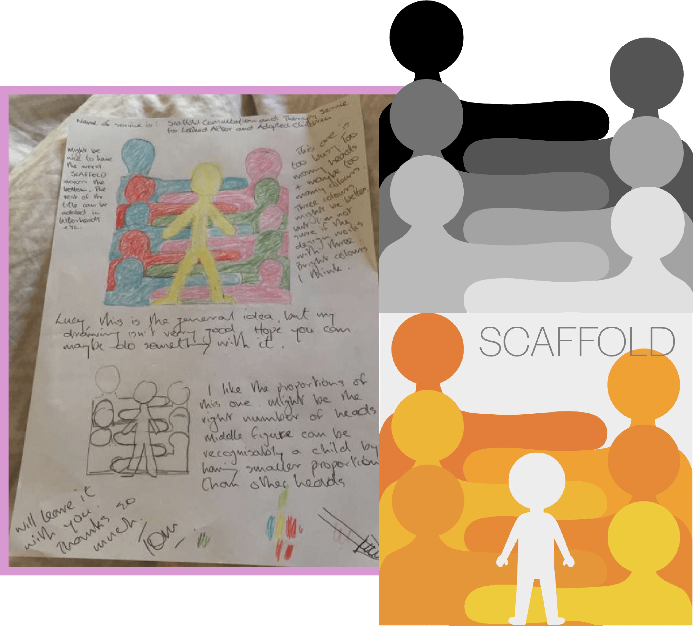
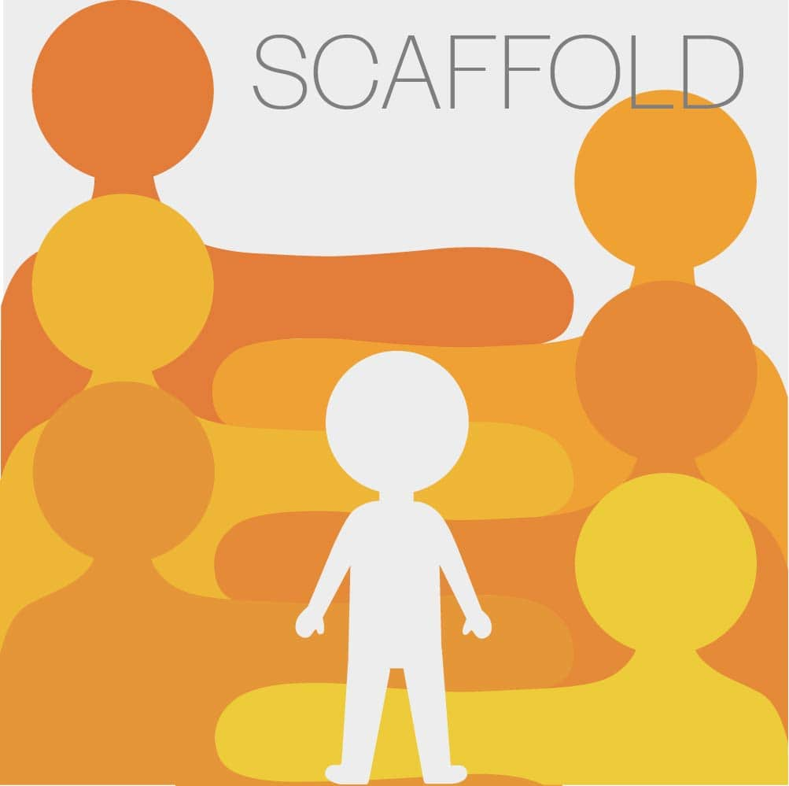
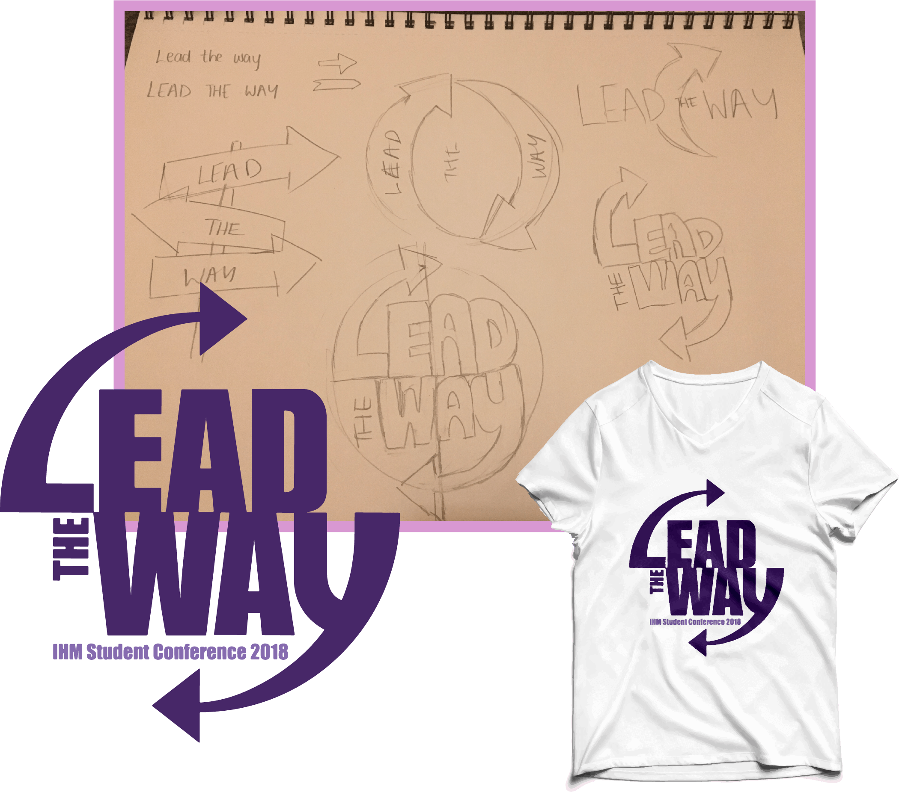
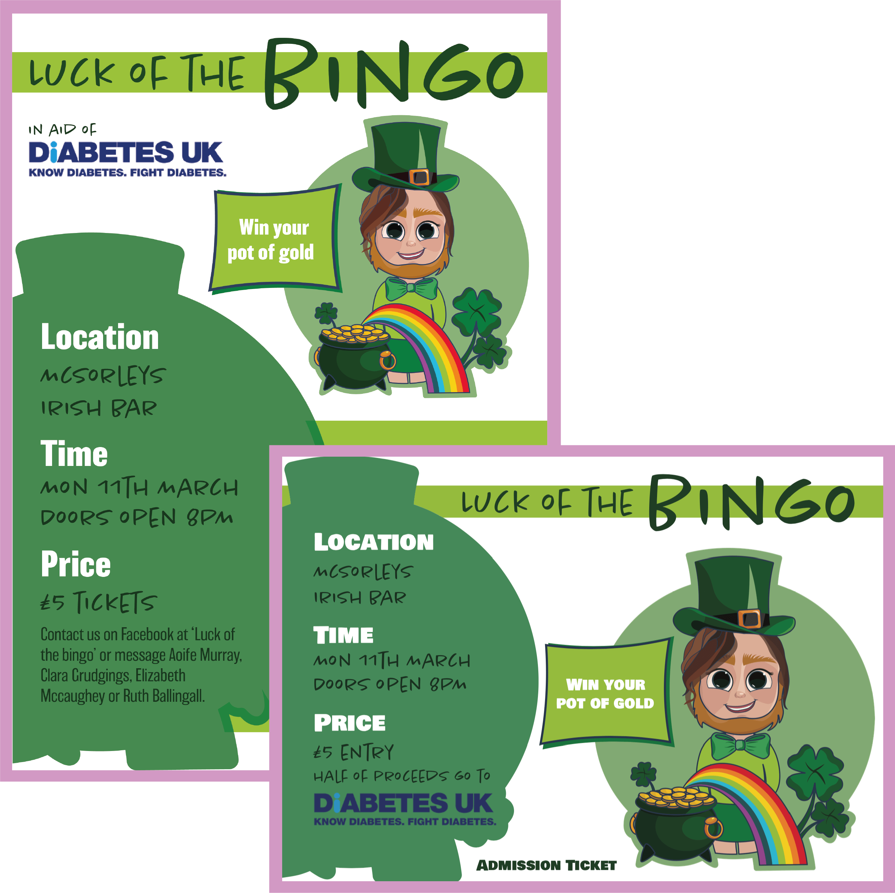
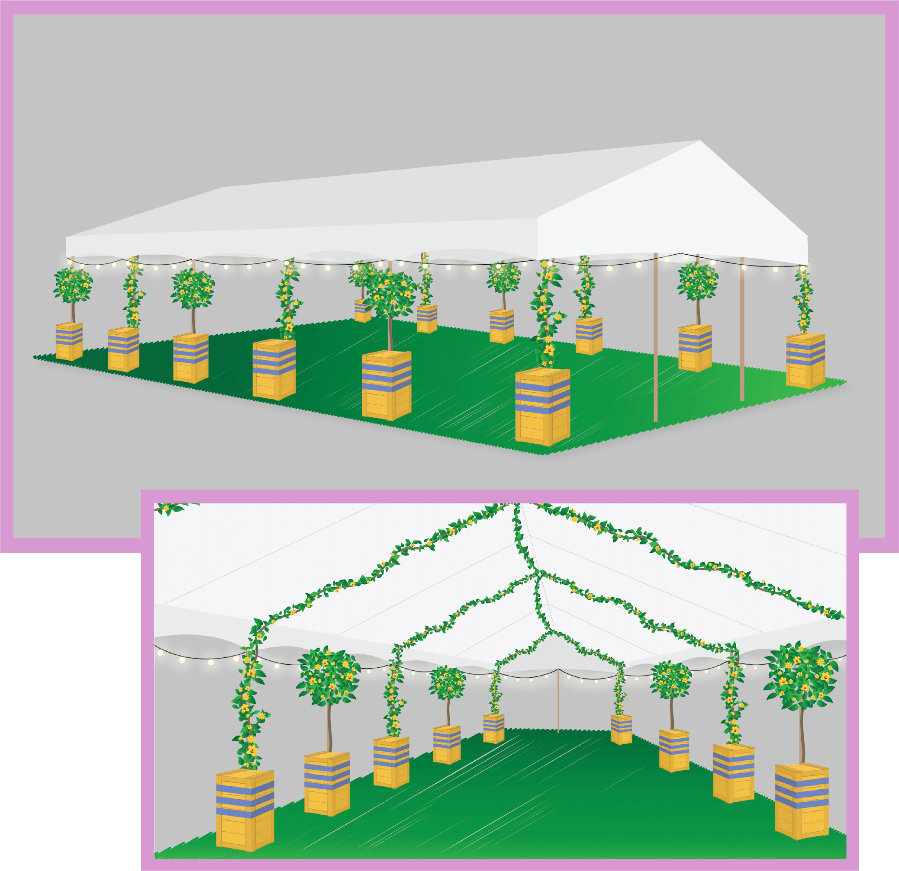
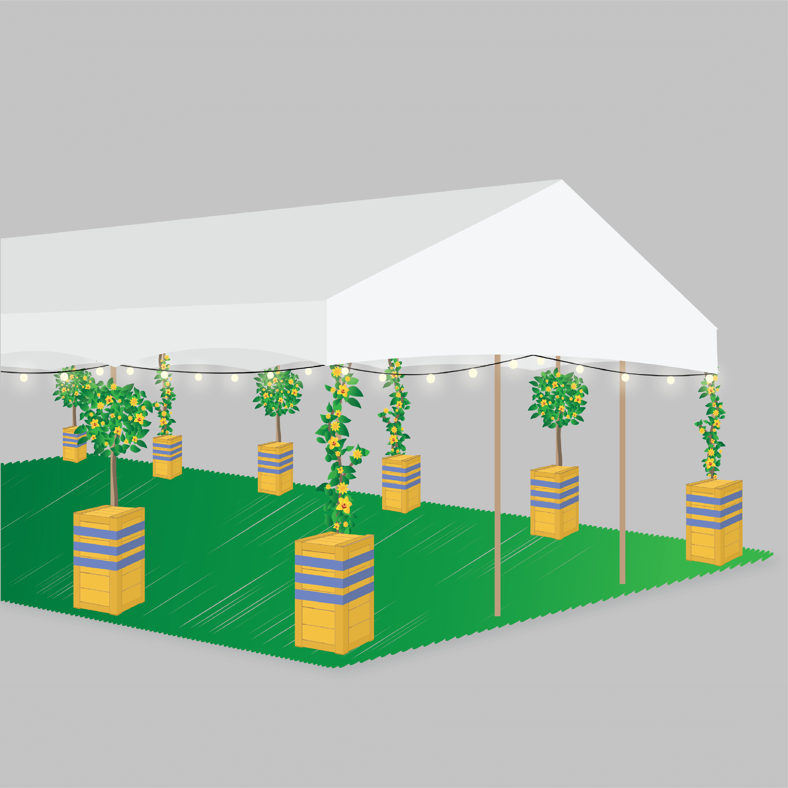

This included a background of “adult” silhouettes in the placement as though it looks like they are holding arms which in turn created a ladder effect as each arm sits on top of the each other representing the idea of a scaffold. Standing in front of the “adult” silhouettes as a main focus was a smaller character, to represent a child surrounded by the support of adults. I designed multiple variations, some with more detail than others, as well as different colours and typography choices etc. In the end, the client opted towards the orange, simplistic variation shown on the right and was very pleased with the outcome.


I created a series of nine illustrations using my own images, starting with close-up photographs as this was easier to illustrate details. However I also challenged myself to illustrating photographs of multiple people and animals. I gifted my prints to friends and famiy which recieved such a great response, as well as posting them on my instagram page recieving future requests from other people who also loved my illustrations.


The client suggested the idea of using arrows so I began sketching out different possibilities which lead me to the favourite design shown on the right. The focus of this project was more so on typography which I believe is successfully incorporated into the design.


Using one of my Special Occasicons (designed in a previous project avaiable to view here) for Saint Patrick's Day, I altered it slightly and incorporated it in the ticket and poster design.


Based on their description of how they planned the marquee to look, I design a variation of illustrations resulting to the completed two images on the right - one is a view from the outside and another showing the inside view. SBD Events was very impressed with the outcome as believe it visualised exactly what they imagined.


The focus was to produce something simple and informative making sure the branding and contact details are clearly visible, as well using fun and colourful images to show off just some of the SBD's amazing work and past events.